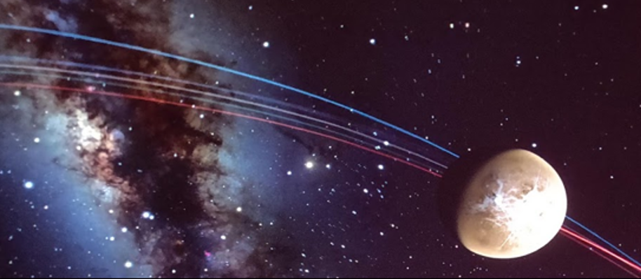

OpenSpace Sonification: Complementing Visualization of the Solar System with Sound 

Venue. ICAD (2021)
Abstract. Data visualization software is commonly used to explore outer space in a planetarium environment, where the visuals of the software is typically accompanied with a narrator and supplementary background music. By letting sound take a bigger role in these kinds of presentations, a more informative and immersive experience can be achieved. The aim of the present study was to explore how sonification can be used as a complement to the visualization software OpenSpace to convey information about the Solar System, as well as increasing the perceived immersiveness for the audience in a planetarium environment. This was investigated by implementing a sonification that conveyed planetary properties, such as the size and orbital period of a planet, by mapping this data to sonification parameters. With a user-centered approach, the sonification was designed iteratively and evaluated in both an online and planetarium environment. The results of the evaluations show that the participants found the sonification informative and interesting, which suggest that sonification can be beneficially used as a complement to visualization in a planetarium environment
Received Best Student Paper award and Best Use of Academic Sound at the ICAD conference.
Link to this page: